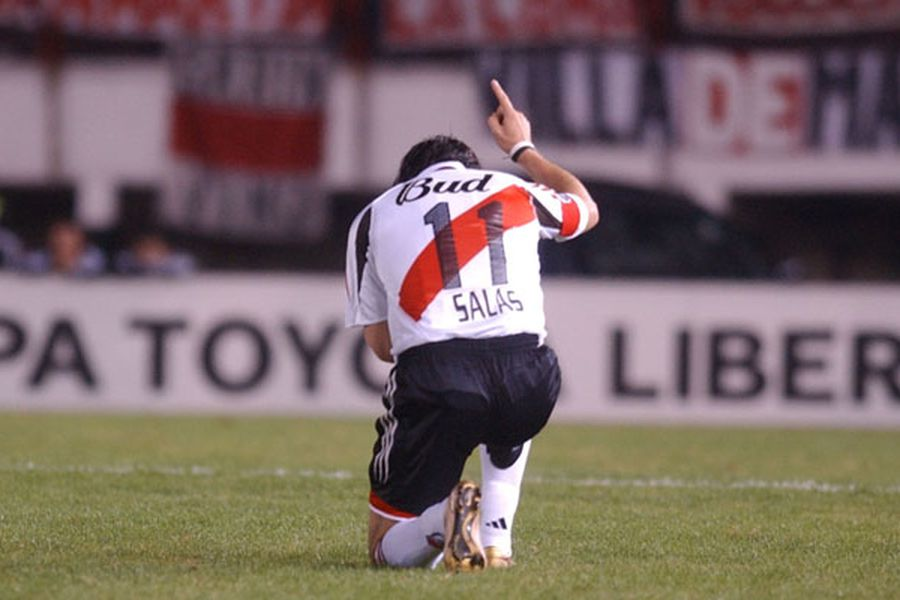
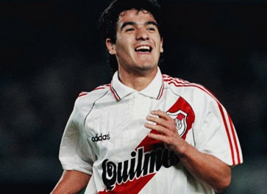

El Matador
Marcelo Salas jugó poco tiempo en River pero le fue suficiente para ganarse el corazón del hincha Millonario. Fue figura de la Supercopa 1997.

El Burrito
Quizás, el ídolo más querido por los hinchas y los no hinchas de River. Ariel Ortega es sinónimo de gambeta y buen futbol.
El Torito
Uno de los últimos ídolos de River. De los pocos que dió la cara en la peor etapa de la historia del club.